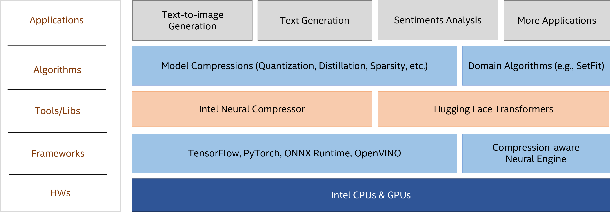

Intel® Extension for Transformers
Intel® Extension for Transformers* is an innovative toolkit to accelerate Transformer-based models on Intel platforms, particularly effective on 4th Gen Intel® Xeon® Scalable processor (code named Sapphire Rapids).
Overview
Transformer-based models are a type of deep learning model useful for natural language processing (NLP) tasks, such as text-to-image, text generation, sentiment analysis and more. The transformer-based models have become one of the most widely used architectures in NLP and has achieved state-of-the-art results on a wide range of tasks. Some popular transformer-based models include BERT, GPT, and T5.
Intel® Extension for Transformers* provides the key features and examples as below:
Seamless user experience of model compressions on Transformers-based models by extending Hugging Face transformers APIs and leveraging Intel® Neural Compressor
Advanced software optimizations and unique compression-aware runtime (released with NeurIPS 2022’s paper Fast Distilbert on CPUs and QuaLA-MiniLM: a Quantized Length Adaptive MiniLM, and NeurIPS 2021’s paper Prune Once for All: Sparse Pre-Trained Language Models)
Optimized Transformer-based model packages such as Stable Diffusion, GPT-J-6B, GPT-NEOX, BLOOM-176B, T5, Flan-T5 and end-to-end workflows such as SetFit-based text classification and document level sentiment analysis (DLSA)
NeuralChat, a custom Chatbot trained on Intel CPUs through parameter-efficient fine-tuning PEFT on domain knowledge
For more details, visit the Intel® Extension for Transformers GitHub repository.
Recommended Hardware
Validated Hardware Environment
Intel® Extension for Transformers* supports systems based on Intel® Xeon® Scalable processors:
| CPUs | Supported Data Type |
|---|---|
| Intel® Xeon® Scalable processor code named Skylake, Cascade Lake, Ice Lake | fp32, int8 |
| Intel® Xeon® Scalable processor code named Cooper Lake, Sapphire Rapids Intel® Xeon® CPU Max Series (formerly code named Sapphire Rapids HBM) |
fp32, bf16, int8 |
How it Works
The toolkit helps developers improve productivity through easy-to-use model compression APIs that provide a rich set of model compression techniques: quantization, pruning, distillation, and more.
For reference deployment, the toolkit also provides an Intel optimized Transformer-based model package by leveraging Intel AI software tools such as Intel® Extension for PyTorch* and a unique compression-aware runtime (also known as a Neural Engine), to demonstrate the performance of extremely compressed models.
Together, these can significantly improve inference efficiency on Intel platforms.

Get Started
1. Prerequisites
The following software environment is required:
OS version: CentOS 8.4, Ubuntu 20.04, Windows 10
Python version: 3.7, 3.8, 3.9
2. Installation
We provide three ways for installation: install from PyPi, install from Conda, and build from source code.
2.1 Install from PyPi
# install stable basic version from pypi
pip install intel-extension-for-transformers
2.2 Install from Conda
# install stable basic version from from conda
conda install -c intel intel_extension_for_transformers
2.3 Install from Source
git clone https://github.com/intel/intel-extension-for-transformers.git itrex
cd itrex
pip install -r requirements.txt
# Install intel_extension_for_transformers
pip install -v .
You can check if installation succeeded by running pip list | grep intel_extension_for_transformers
3. How To Run
In this example, we show how to use the quantization API for model optimization. For other model compression samples, refer to Get Started Page. For additional validated examples, refer to Support Model Matrix
3.1 Install Requirements
pip install transformers datasets onnx onnxruntime torch
pip install neural-compressor
3.2 Prepare Datasets
from datasets import load_dataset, load_metric
import numpy as np
from transformers import AutoConfig,AutoModelForSequenceClassification,AutoTokenizer, EvalPrediction
# load dataset and tokenizer
raw_datasets = load_dataset("glue", "sst2")
# pre-trained model is available on https://huggingface.co/models
tokenizer = AutoTokenizer.from_pretrained("distilbert-base-uncased-finetuned-sst-2-english")
# preprocess dataset
raw_datasets = raw_datasets.map(lambda e: tokenizer(e['sentence'], truncation=True, padding='max_length', max_length=128), batched=True)
3.3 Model Compression
Documentation for API usage can be found here
from intel_extension_for_transformers.transformers import QuantizationConfig, metrics, objectives
from intel_extension_for_transformers.transformers.trainer import NLPTrainer
# load config, model and metric
config = AutoConfig.from_pretrained("distilbert-base-uncased-finetuned-sst-2-english",num_labels=2)
# pre-trained model is available on https://huggingface.co/models
model = AutoModelForSequenceClassification.from_pretrained("distilbert-base-uncased-finetuned-sst-2-english",config=config)
model.config.label2id = {0: 0, 1: 1}
model.config.id2label = {0: 'NEGATIVE', 1: 'POSITIVE'}
metric = load_metric("glue", "sst2")
def compute_metrics(p: EvalPrediction):
preds = np.argmax(p.predictions, axis=1)
return metric.compute(predictions=preds, references=p.label_ids)
# Replace transformers.Trainer with NLPTrainer
trainer = NLPTrainer(model=model,
train_dataset=raw_datasets["train"],
eval_dataset=raw_datasets["validation"],
compute_metrics=compute_metrics,
tokenizer=tokenizer
)
# model quantization using trainer
q_config = QuantizationConfig(metrics=[metrics.Metric(name="eval_accuracy")])
model = trainer.quantize(quant_config=q_config)
# test sentiment analysis with quantization
input = tokenizer("I like Intel Extension for Transformers", return_tensors="pt")
output = model(**input).logits.argmax().item()
# save optimized model if you need
trainer.save_model("saved_results")
# if use Neural Engine for model inference, need to export to onnx model. The default path is "./tmp_trainer/int8-model.onnx"
trainer.enable_executor = True
trainer.export_to_onnx(scale_mapping=True)
3.4 Model Inference
For deployment, we show how to use Neural Engine for model inference. For additional validated examples under different backends, refer to Support Model Matrix
import os
from examples.deployment.neural_engine.common import log, set_log_file, load_graph, DummyDataLoader, compute_performance
# reduce log size by setting GLOG_minloglevel=2
os.environ['GLOG_minloglevel'] = '2'
# set log file
set_log_file(log, "benchmark.log")
# input model is quantized onnx model obtained in previous section
input_model = "tmp_trainer/int8-model.onnx"
# load model
graph = load_graph(input_model)
# define dataset shape and generate dataloader
batch_size, seq_len, warm_up = 8, 128, 10
shape = [batch_size, seq_len]
dataset = DummyDataLoader(shapes=[shape, shape], lows=[0, 0], highs=[128, 1], dtypes=['int32', 'int32'], iteration=100)
# run performance benchmark
compute_performance(dataset, graph, log, "benchmark.log", warm_up, batch_size, seq_len)
Visit Intel® Extension for Transformers online document for more API details.
Expected Output
For deployment reference, we will provide detailed latency/throughput output. P50 refers to the top 50% latency value, P90 refers the top 90% latency value, and P99 refers the top 99% latency value.
[INFO] Batch size = 8
[INFO] Sequence length = 128
[INFO] P50 Latency: xxx ms
[INFO] P90 Latency: xxx ms
[INFO] P99 Latency: xxx ms
[INFO] Average Latency: xxx ms
[INFO] Throughput: xxx samples/sec
Summary and Next Steps
You have just executed a simple end-to-end workflow to accelerate transformer-based models by model compression and compression-aware runtime inference. For more optimization workflows, check out the tutorial
Learn More
For more information about or to read about other relevant workflow examples, see these guides and software resources:
Blog published on Medium: MLefficiency — Optimizing transformer models for efficiency (Dec 2022)
NeurIPS’2022: Fast Distilbert on CPUs (Nov 2022)
NeurIPS’2022: QuaLA-MiniLM: a Quantized Length Adaptive MiniLM (Nov 2022)
Check out more workflow examples and reference implementations in the Developer Catalog.
Support
Submit your questions, feature requests, and bug reports to the GitHub issues page. You may also reach out to Maintainers.
*Other names and brands may be claimed as the property of others. Trademarks